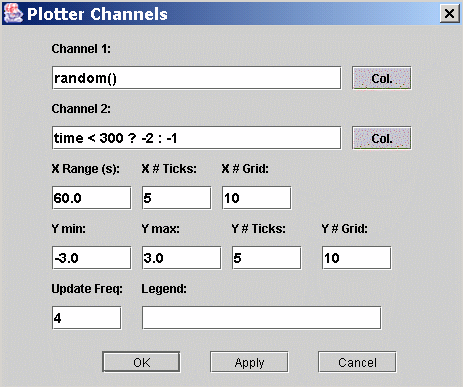

A plotter with one or two channels.
N/A
Show/Hide
Toggle the visibility of the plotter.

Pause:
Pauses the plotting.
Continue:
Continues the plotting.
Edit
Opens the plotter properties dialog.

Channel 1:
An expression that will be evaluated and plotted on channel one.
Channel 1 Color:
Choose the drawing color of channel one.
Channel 2:
An expression that will be evaluated and plotted on channel two.
Channel 2 Color:
Choose the drawing color of channel two.
X Range (s):
The range of the x-axis in seconds.
X # Ticks:
The number of tick marks on the x-axis.
X # Grid:
The number of grid lines on the x-axis.
Y min:
The minimum value of the y-axis.
Y max:
The maximum value of the y-axis.
Y # Ticks:
The number of tick marks on the y-axis.
Y # Grid:
The number of grid lines on the y-axis.
Update Freq.:
The update frequency in relation to the scan cycle. For example a value
of 2 means that the plotter panel will be updated every second scan.
Legend:
A text that will be printed at the top of the plotter panel.